Olive Media
올리브 미디어
올리브성형TV · 언론 보도 · 병원 소식
HOME미디어올리브 미디어
Olive Media
Media
올리브의 영상과 소식
제목을 누르면 원래 기사로 이동합니다.
- 성형외과의사회, 창춘 ‘한중 의료미용·성형기술 교류회’ 참석···양국 성형외과 학술 교류…의사신문 · 2026-10-21
- 대한성형외과의사회 中 창춘서 한중 성형외과 학술 교류의협신문 · 2026-09-29
- 성형외과의사회, 중국 길림성 의료 대표단 교류한의신문 · 2026-09-16
- 성형외과의사회, 중국 길림성 대표단과 의료미용 산업 교류회의협신문 · 2026-09-10
- 불법의료·과장광고에 칼 뺀 성형외과醫 "국민 신뢰 지킬 것"청년의사 · 2026-09-07
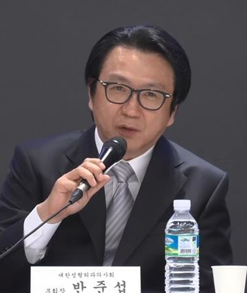
성형외과의사회 반준섭 신임 회장 “K-성형 글로벌 위상 높인다”의학신문 · 2026-08-24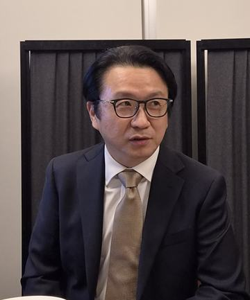
반준섭 성형외과의사회장 취임…보건뉴스 · 2026-08-19- 서울 의료관광, 고부가가치 생태계 전환 모색헤럴드경제 · 2026-07-13
- 서울 의료관광 경쟁력 해법은 ‘한강 벨트’… KMTPA, 규제 개선·플랫폼 구축 논의스포츠월드 · 2026-07-13
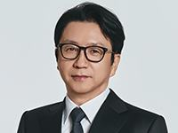
대한성형외과의사회장에 반준섭 올리브성형외과 대표원장뉴스1 · 2026-07-13- 성형외과의사회, 중국 길림성 의료미용 대표단과 교류회 개최메디컬월드뉴스 · 2026-06-23
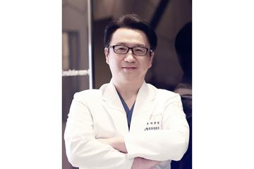
"성형외과 불법 의료행위·과장광고 단호하게 대처하겠다"메디칼타임즈 · 2026-06-06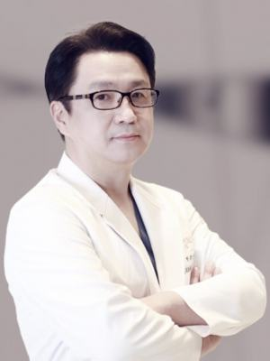
반준섭 대한성형외과의사회장 취임 "K-성형 경쟁력 강화"의협신문 · 2026-06-04- 코 재수술, 인공보형물 부작용 우려된다면 자가조직 이용한 무보형물 성형 고려메디컬투데이 · 2021-05-31
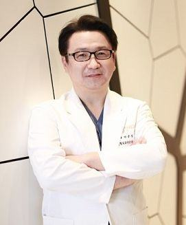
남자 코수술, 여자와 해부학적 구조 달라...수술방향도 다르게 접근해야!라포르시안 · 2021-04-12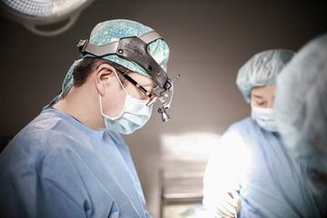
조화로운 눈·코성형 위해 고려해야할 사항은?제민일보 · 2021-03-12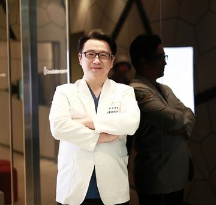
코재수술, 이목구비 조화·균형 고려하셨나요?세계비즈 · 2021-01-27- 여자 코수술, 얼굴 전체 균형과의 조화 중요해~포인트데일리 · 2020-12-30
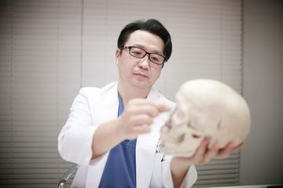
남자 코성형, 여자보다 골격 커 수술 접근 방법 달라라포르시안 · 2020-11-11- '코 재수술' 계획 중이라면 정밀 진단 선행해야~스포츠한국 · 2020-10-13
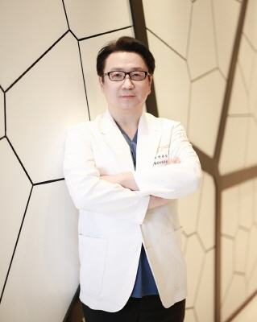
코 재수술, 개인의 상태 따라 수술시기·수술법 달리 적용해야메디컬투데이 · 2020-08-17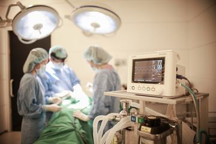
수험표 있으면 성형 할인?… 성형 권하는 ‘어른들’머니투데이 · 2020-01-14- 성형 권하는 사회… 온라인·앱 통한 환자 유치 경쟁 천태만상쿠키뉴스 · 2019-12-10
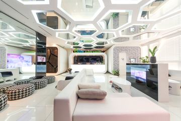
의료광고 심의 의무화 혼란…어플·동영상 심의 확대메디칼타임즈 · 2018-09-14- 모바일로 '성형견적' 요청하니 성형외과 3곳서 콜메디칼타임즈 · 2018-09-07
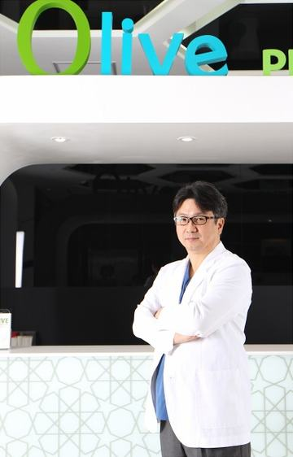
4D 가상코 성형 시뮬레이션 통해 미래의 내 모습 확인할 수 있어경남매일 · 2018-08-21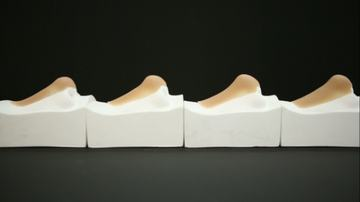
4D 가상코성형, 변화를 미리 경험해보자머니투데이 · 2018-01-08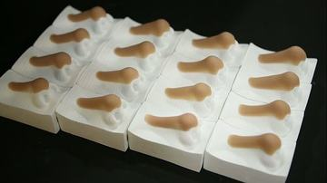
4D 가상코성형, 미리 접하는 변화라포르시안 · 2018-01-05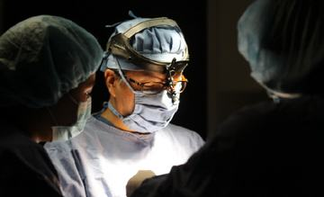
코재수술, 실패없이 확실한 방법으로 진행해야디지털타임스 · 2017-09-26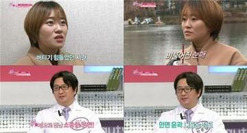
스타메이커 닥터군단 뷰티마스터 반준섭 원장의 신예영을 향한 신의 한수뉴스1 · 2016-04-07- [뉴시스] V라인 얼굴 만들기…섣부른 판단은 금물2014-06-30
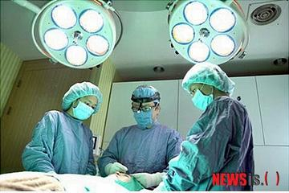
[뉴시스] 반준섭 원장 "코수술, 관리 잘해서 재수술 낮춰야"2014-06-30- [머니투데이] 코성형, 재료선택 보다 올바른 방법이 중요2014-06-30
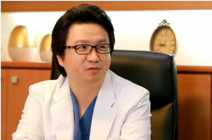
SAMSUNG LED CF 영상2013-06-28- KBS 'VJ 특공대'에 방송된 올리브성형외과2011-01-19
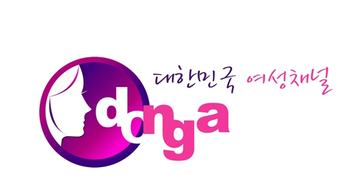
동아TV '뷰티액추얼리'에 방송되었습니다2011-01-19- KBS '생방송 세상의 아침'에 방송되었습니다2011-01-19
- GTV 도전 퀸앤킹카 방송2011-01-19
- m.net에 방송된 반준섭원장의 인터뷰2011-01-19
- SBS '사랑해요 우리말' 촬영 장소로 이용된 올리브성형외과2011-01-19
- 동아일보 취재 인터뷰기사2011-01-19
- MBC에 방송된 올리브성형외과2011-01-19
- eQueens.com '이달의 Expert'로 선정2011-01-19
- 스포츠서울 취재, 성형 리메이크 시대 기사에 도움말2011-01-19
- 국민일보, 종아리근육퇴축술 취재2011-01-19
- MBC '6mm 세상탐험'에 출연2011-01-19
- 노블레스 1월호 '주걱턱, 무턱 수술로 아름다운 턱선을' 기고2010-11-01
- 노블레스 12월호2010-11-01
제목을 누르면 내용이 펼쳐집니다.
66
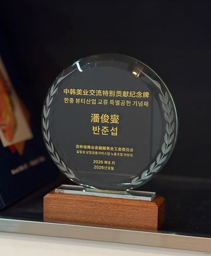
반준섭 대표원장, 한중 뷰티산업 교류 특별공헌 기념패 수여2026-10-30안녕하세요. 올리브성형외과입니다.
반준섭 대표원장님
2026년 9월, 길림성 상업금융서비스업 노동조합 위원회로부터
‘한중 뷰티산업 교류 특별공헌 기념패’를 받았습니다.
이번 기념패는
한국과 중국의 뷰티산업 교류에
기여한 뜻을 기리는 의미로 전달되었습니다.
뜻깊은 기념패를 전해주신 관계자 여러분께 감사드리며,
앞으로도 양국 간 이해와 교류를 넓히는 데
관심을 기울이겠습니다.
감사합니다.
올리브성형외과
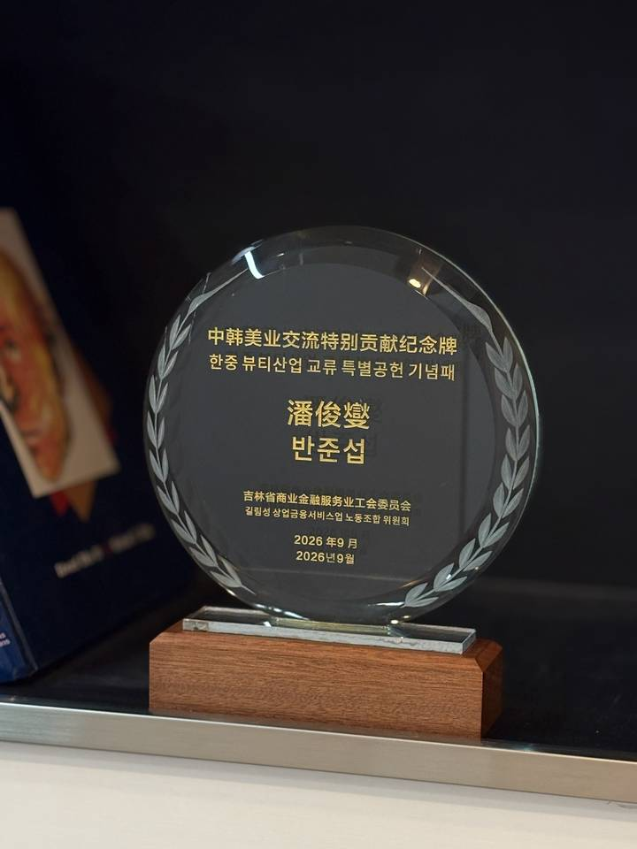
65
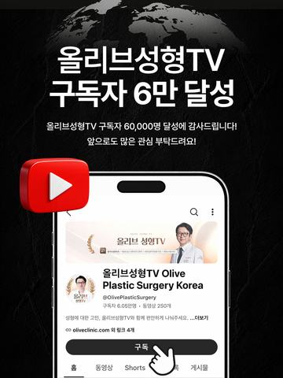
올리브성형외과 올리브성형TV 구독자 6만 명 달성!2026-10-23올리브성형TV 구독자 6만 명,
함께해 주셔서 감사합니다.
구독해 주시고 따뜻한 관심과 응원을 보내주신
모든 분께 진심으로 감사드립니다.
여러분의 성원 덕분에 구독자 6만 명이라는
뜻깊은 순간을 맞이했습니다.
앞으로도 성형에 관한 궁금증을 알기 쉽게 풀어드리고,
유익하고 신뢰할 수 있는 정보를 전하기 위해 노력하겠습니다.
올리브성형TV와 앞으로도 함께해 주세요. 감사합니다.
Olive Plastic Surgery TV has reached 60,000 subscribers. Thank you for being part of our journey!
We sincerely thank everyone who has subscribed and supported our channel. Your encouragement has helped us reach this meaningful milestone.
We will continue to answer your questions about plastic surgery in a clear, accessible way and strive to bring you helpful, reliable information.
Thank you for your continued support of Olive Plastic Surgery TV.
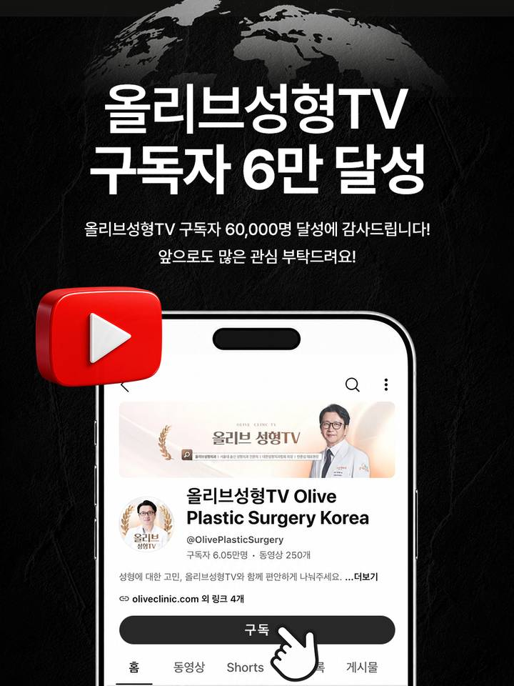
64
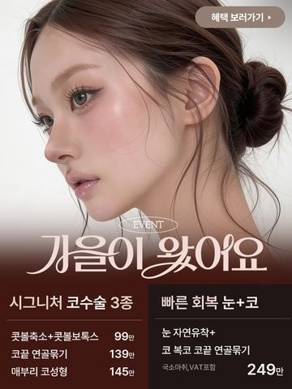
올리브성형외과 10월 예약 고객 대상 혜택2026-10-06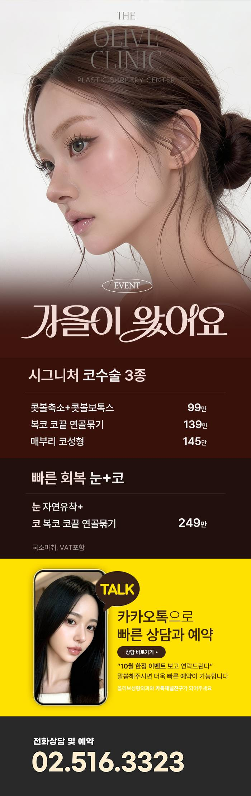
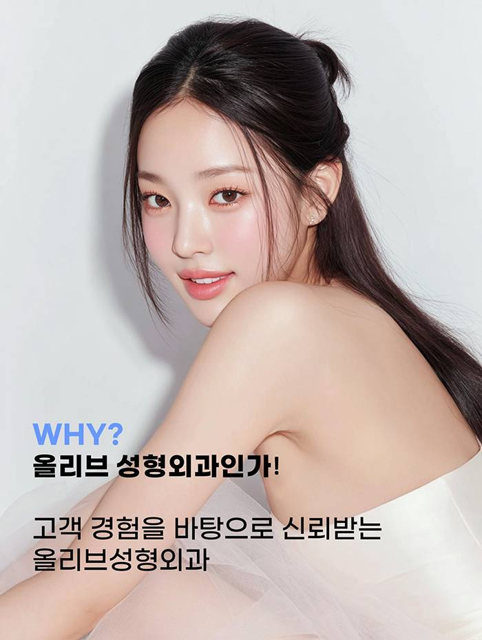
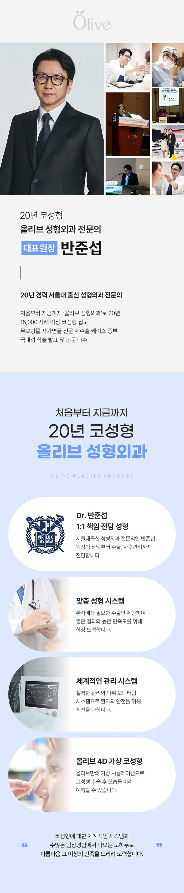
63올리브성형외과 9월 추석진료 안내2026-09-08
안녕하세요 올리브성형외과입니다.
풍요롭고 즐거운 한가위 보내시길 바라며,
내원 하실 때 진료 일정을 참고하시길바랍니다.
24(목) 정상진료
25(금), 26(토), 27(토) 휴진
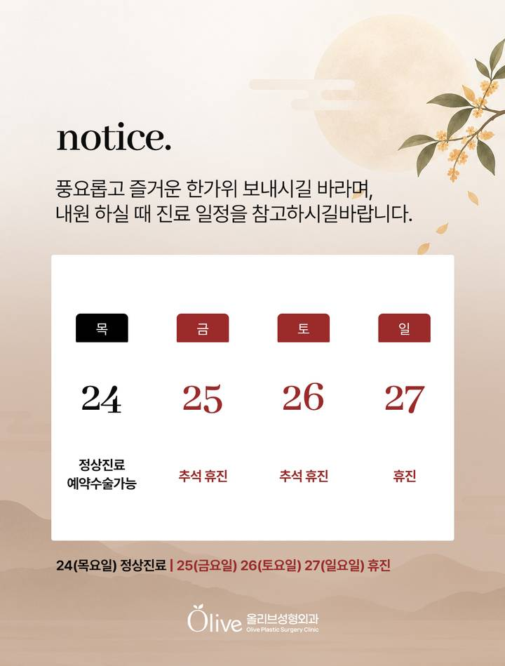
62
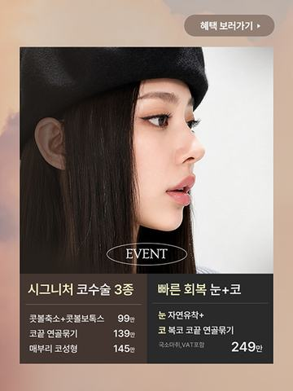
올리브성형외과 9월 예약 고객 대상 혜택2026-09-02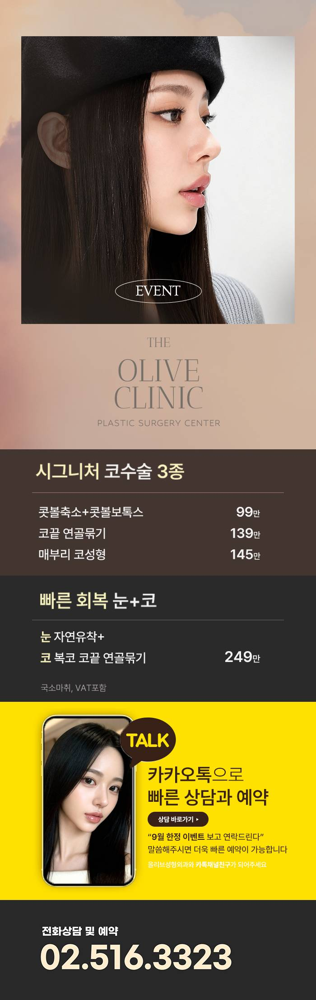
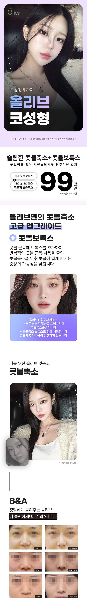
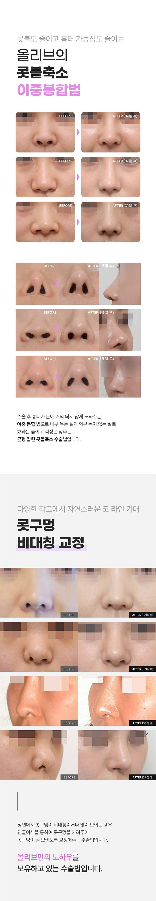
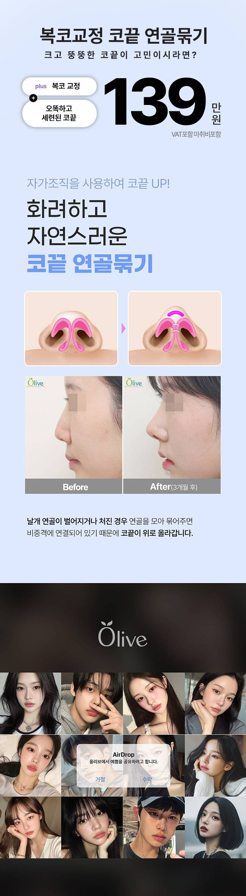
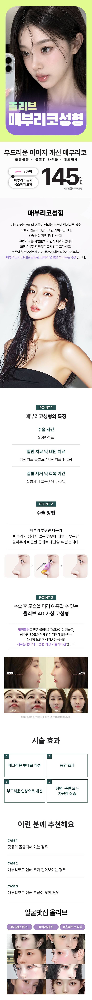
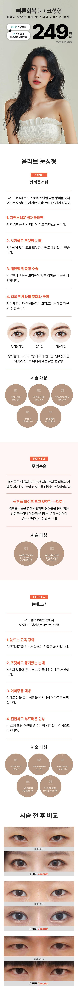
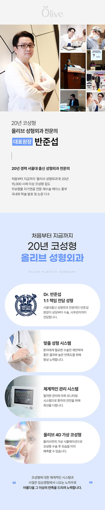
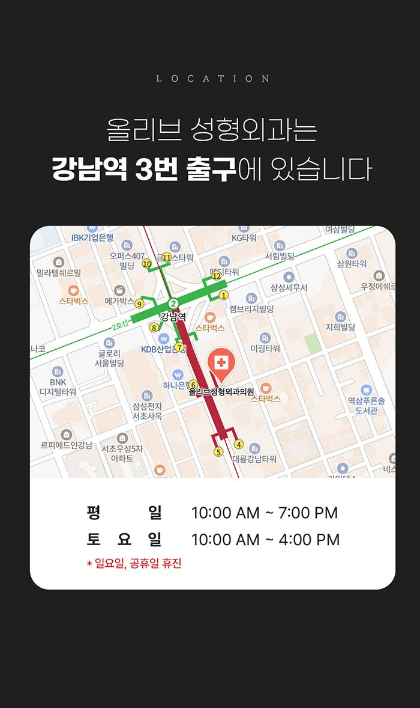
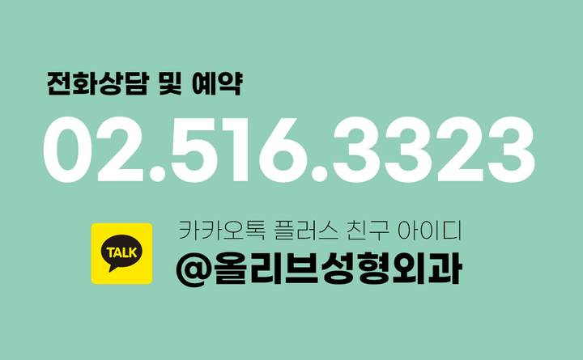
61반준섭 원장님의 대한성형외과의사회 회장 취임을 다시 한번 진심으로 축하드립니다2026-08-11
오늘은 진료실 밖에서, 특별한 축하를!
대한성형외과의사회 회장 취임을 축하드리며,
올리브성형외과 식구들이 반준섭 원장님과 함께
조촐하지만 따뜻한 축하 파티를 가졌습니다.
바쁜 일상 속 잠시나마 모두 함께 웃으며
기쁜 순간을 나눌 수 있어
더욱 뜻깊었던 시간이었습니다
앞으로도 지금처럼 환자 한 분 한 분께 진심을 다하며,
신뢰할 수 있는 진료로 보답하는
올리브성형외과가 되겠습니다.
반준섭 원장님의 대한성형외과의사회 회장 취임을
다시 한번 진심으로 축하드립니다!
#올리브성형외과 #반준섭원장
#대한성형외과의사회 #회장취임
#취임축하 #축하파티 #강남역성형외과 #올리브이야기
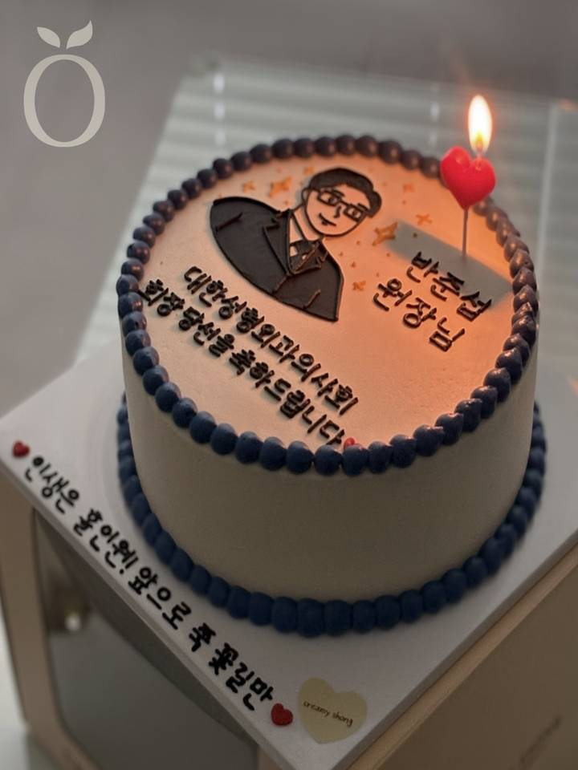
60
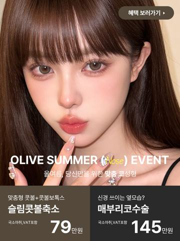
올리브성형외과 코수술 8월 예약 고객 대상 혜택2026-08-04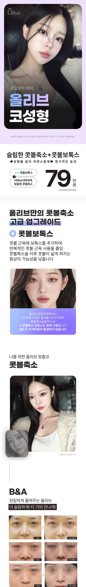
59올리브성형외과 반준섭 대표원장, 2026 서울의료관광정책포럼 & 제 100회 한국관광학회 서울국제학술대회 발표...2026-07-29
2일 서울 중구 웨스틴조선호텔에서 ‘서울의료관광정책포럼’이 열렸다.
‘대한민국 의료관광의 글로벌 경쟁력 제고’를 주제로
한국의료관광진흥협회(KMTPA)가 주최한 서울의료관광정책포럼은
‘제100회 한국관광학회 서울국제학술대회 & 2026 서울국제관광포럼’의 특별세션으로 진행됐다.
▲반준섭 대한성형외과의사회 회장이 2일 서울 중구 웨스틴조선호텔에서 열린 ‘서울의료관광정책포럼’에서 발표하고 있다. ‘대한민국 의료관광의 글로벌 경쟁력 제고’를 주제로 한국의료관광진흥협회(KMTPA)가 주최한 서울의료관광정책포럼은 ‘제100회 한국관광학회 서울국제학술대회 & 2026 서울국제관광포럼’의 특별세션으로 진행됐다. 신태현 기자 holjjak@ 출처: 이투데이
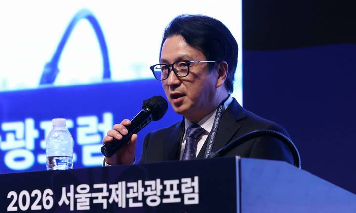
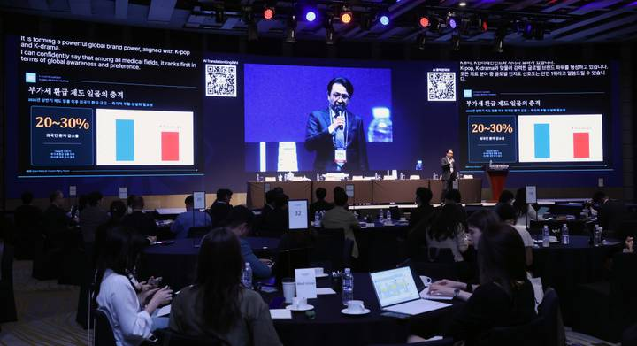
58
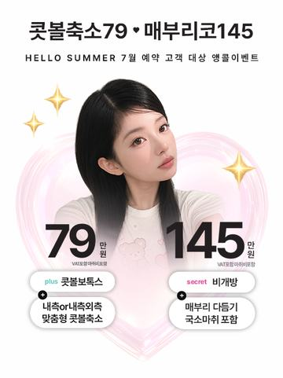
올리브성형외과 7월 예약 고객 대상 혜택2026-07-03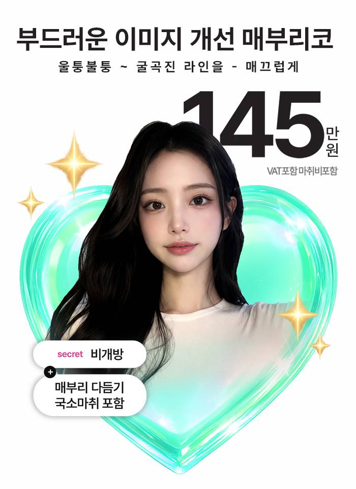
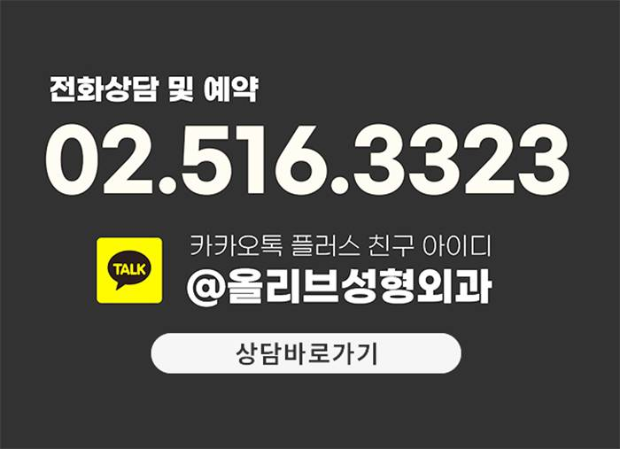
57대한성형외과의사회, 중국 길림성 의료미용 대표단과 교류회 개최2026-06-22
대한성형외과의사회, 중국 길림성 의료미용 대표단과 교류회 개최
대한성형외과의사회(회장 반준섭)는
6월 12일 서울 코엑스에서
중국 길림성 대표단과 함께 한·중 의료미용 분야 교류회를 개최했다.
이번 행사에는 중국 길림성 상무청과
중한(창춘)국제협력시범구 관계자를 비롯해 길림성 성형미용산업협회,
길림대학교병원 등 의료계 관계자들이 참석하였으며,
한국 측에서는 대한성형외과의사회와 대한피부과의사회,
주요 성형외과 및 피부과 의료기관 관계자들이 함께했다.
반준섭 회장은 환영사를 통해
“한국과 중국은 의료미용 분야에서
오랜 교류의 역사를 가지고 있으며,
이번 만남이 양국 의료진 간 상호 이해를 높이고
실질적인 협력 기반을 확대하는
계기가 되기를 기대한다”고 밝혔다.
행사에서는 한국 성형외과 및 피부과 분야의 전문의 교육체계와 학술활동,
의료서비스 발전 현황 등이 소개되었으며,
중국 측은 길림성 의료미용 산업의 발전 현황과 의료자원 현황을 공유했다.
56올리브성형외과 반준섭 대표원장 대한성형외과의사회 회장 취임2026-06-17
대한성형외과의사회 회장 취임
올리브성형외과 반준섭 대표원장님께서
대한성형외과의사회 회장으로 취임하였습니다.
대한성형외과의사회는 국민의 안전과 건강을 최우선으로 생각하며,
올바른 의료환경 조성과 성형외과 의료의 발전을 위해 노력하는 전문 의료단체입니다.
올리브성형외과는 앞으로도 환자 한 분 한 분의 안전을 최우선 가치로 삼고,
정직한 진료와 끊임없는 연구를 바탕으로 더욱 신뢰받는 의료 서비스를 제공하기 위해 최선을 다하겠습니다.
대한성형외과의사회 회장이라는 새로운 책임과 사명을 바탕으로,
더욱 높은 의료 윤리와 전문성을 실천하며 환자 중심의 진료를 이어가겠습니다.
앞으로도 성형외과 의료의 올바른 발전과 안전한 의료문화 정착을 위해 최선을 다하겠습니다.
보내주신 신뢰에 깊이 감사드리며,
앞으로도 변함없는 책임감과 전문성으로 여러분 곁을 지키겠습니다.
55올리브 6월 예약 고객 대상 혜택2026-06-05
54올리브성형외과, 서울특별시의사회 10년이상 최우수 회원 선정 2026년2026-05-19
올리브성형외과, 서울특별시의사회 10년이상 최우수 회원 선정 2026년
서울특별시의사회에서는
의사회의 윤리규칙을 준수하고 징계사유가 없는 의료인을 선별해
최우수 회원을 선정해 오고 있습니다.
올리브성형외과는 개원 이래 10년 넘게 최우수 회원으로 연속 선정되고 있습니다.
최우수회원 선정에 대한 기준은 의료인의 윤리규칙 준수 외에도
검진건수에 따른 맞춤형 진료로 국가건강검진의 질 향상에 기여한 점 등
여러 부분 반영된다고 알려져 있습니다.
올리브성형외과는 코 성형 분야에 대한 깊이 있는 연구와 안전 중심의 진료 시스템을 바탕으로
보다 섬세한 의료 서비스를 제공하기 위해 노력하겠습니다
개개인의 얼굴 비율과 이미지에 맞춘 맞춤 코성형은 물론,
재수술 · 기능코 · 디테일한 디자인 요소까지 고려하여
자연스럽고 조화로운 결과를 지향합니다.
앞으로도 코 성형에 대한 풍부한 임상 경험과 진정성 있는 진료를 바탕으로
올리브성형외과만의 진료 철학을 이어가겠습니다.
감사합니다.
53올리브 5월 예약 고객 대상 혜택2026-05-07
52유튜브 구독자 5만명 달성! 감사합니다2026-03-30
안녕하세요, 올리브성형외과 대표원장 성형외과 전문의 반준섭입니다.
많은 분들의 관심과 신뢰 덕분에
"올리브 성형TV" 유튜브 채널 구독자 5만명을 달성하게 되었습니다.
코성형에 대한 올바른 정보와
자연스러운 결과를 전해드리고자 시작했는데,
이렇게 많은 분들이 함께해 주셔서 진심으로 감사드립니다.
앞으로도
과장되지 않은 정확한 정보,
개인 얼굴에 맞는 자연스러운 디자인,
성형외과 전문의로서 책임 있는 진료로 보답드리겠습니다.
진심 어린 관심과 신뢰에 다시 한 번 깊이 감사드리며, 앞으로도 많은 응원 부탁드립니다.
.
.
.
.
51hello 20262025-12-31
hello, 2026
어느덧 2025년의
끝자락에 서서 인사를 드립니다
올 한 해 저희 올리브와 함께해주셔서 감사드립니다
다가오는 새해에도 매 순간 진심을 담아,
한결같이 함께하겠습니다.
연말 따뜻하게 보내시고
2026년에는 더 좋은 일들만 가득하시길 바랍니다
새해복 많이 받으세요.
| 강남에서 20년 올리브로만
| 강남역 3번출구 도보 1분거리
| 상담비 무료 주차시설 완비
502025 10월 진료안내2025-09-23
492025년 8월15일 휴진안내2025-08-11
482024 10월 휴진안내2024-09-30
472024 추석연휴 휴진안내2024-09-11
462024년 5월 휴진안내2024-04-30
452024년 4월 휴진안내2024-04-09
442024년 3월 휴진안내2024-02-27
432024년 설연휴 진료안내2024-02-05
422024 1월 휴진안내2023-12-27
412023 12월 휴진안내2023-12-19
402023 한글날(10/9) 휴진안내2023-10-06
392023 추석연휴 휴진안내2023-09-22
382023 광복절 휴진안내2023-08-14
372022년 설연휴 진료안내2022-01-25
362021년 추석연휴 진료안내2021-09-15
352021년 설연휴 진료안내2021-02-03
342021년 1월1일(신정) 휴무안내2020-12-29
33[클린병원]코로나 감염예방 대응!안심하고 진료받으세요~2020-12-21
322020년 10월 24(토) 휴진일정안내2020-10-20
312020년 10월 진료일정 안내2020-09-23
올리브성형외과
10월 진료일정 안내드립니다.
내원 및 예약시 참고하시어 진료에 착오 없으시길 바랍니다.
감사합니다.
302020년 8월 진료일정 안내2020-08-10
올리브성형외과
8월 진료일정 안내드립니다.
내원 및 예약시 참고하시어 진료에 착오 없으시길 바랍니다.
감사합니다.
292020 4월,5월 진료일정 안내2020-04-28
안녕하세요. 올리브성형외과 진료일정을 안내드립니다.
미리 체크하고 내원하시어 진료에 차질 없으시길 바랍니다.
4월 30일(목) 휴진 [석가탄신일]
5월 01일(금) 정상진료 [노동절]
5월 02일(토) 정상진료
5월 04일(월) 정상진료
5월 05일(화) 휴진 [어린이날]
282020 설연휴 진료안내2020-01-21
안녕하세요. 올리브성형외과입니다.
올리브성형외과는 2월 24일부터 28일까지 휴진이며 27일은 예약치료만 진행합니다.
2월 29일부터 정상진료이니 미리 체크하시어 내원하실때 참고부탁드립니다.
272019 추계연수강좌, 코성형연구 발표2019-10-31
올리브성형외과 반준섭 대표원장님께서 2019년 10월 6일 대한성형외과의사회에서 주최하는 2019 추계연수강좌에서
'한국인과 중국인의 선호하는 코모양과 수술법 비교 연구'(Comparison of preferred Nose between Korean and Chinese patient)에 대해 발표 하셨습니다.
올리브성형외과는 오늘도 연구하고 발전합니다.
26[뉴시스] V라인 얼굴 만들기…섣부른 판단은 금물2014-06-30
최근 한 예능프로에서 여가수들의 V라인 각도가 공개돼 놀라움을 주고 있다. 이 방송에서 한 여가수는 21도라는 각도를 자랑하며 V라인 종결자라는 칭호를 얻기도 했다.이처럼 얼굴의 아름다움을 판가름하는 기준은 '또렷한 이목구비와 갸름하고 작은 V라인의 얼굴윤곽'이라 할 수 있다.
28일 압구정 올리브 성형외과(반준섭 원장)에 따르면 연예인들의 잇따른 양악수술이 회자되면서 V라인과 동안 얼굴 등 안면윤곽수술에 대한 관심이 높아지고 있는데 이 때문에 V라인을 만들기를 위해 팩이나 리프팅, 성형 등을 고려하는 경우가 눈에 띄게 많아지고 있다.
안면윤곽을 인터넷에 검색하면 이미 수많은 자료들이 넘쳐 나고 있는 실정이다. 따라서 어떤 자료가 믿을만한 것인지 신중히 살펴봐야 한다.
반준섭 원장은 "작고 갸름한 얼굴이 되기 위해서는 우선 자신의 얼굴에 대한 정밀한 진단이 필요하다"며 "그 결과를 바탕으로 자신에게 맞는 라인과 모양으로 디자인하여 뼈 절제수술을 시행하는 것이 중요하다"고 조언했다.
이어 "일반적인 엑스레이 촬영만으로는 개인의 광대뼈와 턱뼈의 상태를 정확히 알고 수술의 정확성을 높이는 디자인을 하기에 부족하기 때문에 뼈의 길이, 골밀도, 신경선의 주행 경로까지 알 수 있는 3차원 CT가 필수적"이라고 말했다.
그는 "무엇보다 전문적인 실력과 기술을 겸비한 전문병원에서 충분한 상담을 통해 자신에게 가장 적합한 방법을 찾아 시술받는 것이 가장 중요하다"고 덧붙였다.
조진성기자 cjs@newsishealth.com
25[뉴시스] 반준섭 원장2014-06-30
사람을 처음 만났을 때 첫인상은 꽤나 중요하다.
얼굴 중에서도 코는 사람의 시선이 가장 먼저 닿는 곳이고 미를 완성하는 중추적인 부위기 때문에 코수술이 많이 이뤄지고 있다.
최근 코수술이 매우 대중화돼 간단한 수술이라는 오해도 받고 있지만, 재수술율이 상당히 높은 편이다.
7일 올리브성형외과에 따르면 개개인마다 다른 특성에 맞는 수술법을 적용해서 수술을 해야 재수술 가능성을 덜 수 있다고 밝혔다.
또한 인터넷 정보나 유명도도 중요하지만 실제 코성형수술 경험이 풍부하고 신뢰할 수 있는 전문의를 찾아봐야 한다.
과거에는 코성형이 낮은 코를 높이는 것에 국한돼 있었다.
하지만 현재는 콧볼 축소술, 코뼈 축소술, 짧은 코 연장술 등 다양한 수술법이 있으며, 코의 크기를 키우고 줄이는 것은 물론 콧볼이나 콧구멍 등을 원하는 모양에 가깝게 자연스럽게 만들 수도 있다.
코수술에서 가장 보편적으로 이뤄지는 낮은 콧대를 높이는 수술은 코끝에 연골 등을 이식하는 방법, 코끝의 연골을 직접 모아 세워주는 방법 등이 있다.
또한 코끝의 오똑한 느낌을 강조하기 위해서는 연골이식을 사용해 코끝을 날렵하게 높여주는 방법을 사용하기도 한다.
반면 연골과 피부가 과다하게 발달해 코끝의 연골이 좌우로 넓게 벌어져 있는 경우에는 좌우로 벌어져 있는 연골을 가운데로 모아주고 필요에 따라 날개 연골의 일부를 잘라내기도 하며 피부 밑 조직을 일부 제거해 모양을 교정한다.
반준섭 원장은 "코 성형은 재수술을 고려하는 사람들이 많은 수술이기 때문에 한번 할 때 제대로 하는 것이 중요하다"며 "사람마다 코의 형태와 원하는 시술 형태가 다르기 때문에 풍부한 경험과 전문성을 갖춰 시술의 숙련도가 검증된 전문의와 상담하는 것이 필요하다"고 강조했다.
이어 그는 "수술에 대해서는 정확하고 자세하게 아는 것이 중요하다"며 "부작용과 후유증, 관리상의 주의사항 등을 확실하게 이해하고 지키는 것이 수술 전후에 피시술자가 해야 할 일"이라고 말했다.
서민지기자 mingseo@newsishealth.com
24[머니투데이] 코성형, 재료선택 보다 올바른 방법이 중요2014-06-30
코 성형을 생각하는 사람들이 가장 불안해하는 것 중 하나가 수술이 잘못되면 어떻게 하나, 재수술을 해야 되는 것은 아닐까 하는 걱정이다. 특히나 얼굴에서 가장 도드라져 보이는 곳이 코이기 때문에 이러한 걱정은 어쩌면 당연한 일이다.
코는 얼굴의 중심에 위치해 조금의 변화만으로도 얼굴 전체 인상에 큰 변화를 주게 되므로 무조건적인 자신의 희망보다는 얼굴 전체 조화를 고려한 수술법의 선택이 후회 없는 결과를 얻는 방법일 것이다.
코 성형 중 가장 많이 시행되고 있는 수술법은 낮은 코를 높이는 융비술이다. 보통 콧대가 낮으면 코끝도 낮아 콧대와 함께 코끝성형을 병행하는 경우가 많다. 현재 가장 보편적인 수술법은 콧대는 실리콘 보형물을 이용하고, 코끝은 자가 비중격 연골 또는 귀 연골 이식을 이용하여 높이는 방법으로 모양이 좋고 안전성이 높으며, 결과를 오랫동안 유지할 수 있다는 장점이 있다. 코끝부분을 연골이식으로 높여주는 것이 주요 특징인데 이 때문에 최근에는 코 성형을 한 남자 연예인이 TV 프로그램에 나와 귀 연골을 모두 사용했다고 말해 화제가 되기도 했다.
매부리코도 교정이 가능하다. 뼈의 과도한 성장이나 부상 후 코 중앙에 코뼈와 연골의 연결 부분이 튀어나온 매부리코는 코 중간의 돌출된 뼈를 깎아주고 코뼈 양측을 절골하여 모아주게 되며 경우에 따라서는 이와 함께 얇은 보형물을 얹어준다. 매부리코가 아주 살짝만 있는 경우는 보형물만으로 커버해 주기도 한다. 매부리코는 아래로 처진 화살코 모양인 경우가 많은데 따라서 수술시 처진 코끝을 올려주는 수술법을 함께 사용하는 경우가 많다.
들창코는 코의 길이가 짧고 피부가 부족하여 코를 구성하는 코끝 연골이 위쪽 연골에 의해 당겨져 콧구멍이 노출되는 것이다. 짧은 코의 길이를 늘이기 위해서는 연골이식을 통해 코끝연골을 아래로 내려 길이를 늘려주는 방식으로 교정할 수 있다.
서울 강남의 올리브성형외과 반준섭 원장은 “최근에는 자가연골 코끝수술이 각광을 받고 있으나, 사실 재료 자체보다 더 중요한 것은 재료를 어디에 어떻게 사용하여 어떤 모양을 만드느냐이며 이것이 결국 실력이며 전문성”이라고 말했다.
23SAMSUNG LED CF 영상2013-06-28
올리브성형외과는 고객의 입장에서 먼저 생각하고
고객을 배려하는 병원입니다.
22Summer Big Event2013-06-24
21<NEW> 올리브 에스테틱 오픈2013-06-05
올리브성형외과는 1:1 피부측정으로 수술후 맞춤관리 프로그램을 제공해 드립니다.
차별화된 올리브 케어 프로그램으로 고객님들의 피부개선과 피부 책임 관리를 도와드리며
깨끗하고 건강한 피부로 만들어 드리겠습니다.
올리브 에스테틱은 올리브성형외과 병설 프리미엄 에스테틱으로
고가의 첨단장비, 1:1고객맞춤 특수관리, 유명기능성 제품을 사용하여
빠른 피부 개선효과와 안전한 메디컬 스킨케어를 제공해 드립니다.
수술후 기본 관리 프로그램
1. 베이직 관리 (50분)
2. 탄력 모공 집중 관리
3. 화이트닝 관리
4. 트러블 ACNE 관리
5. 트러블 특수 관리
6. 가슴관리
7. V라인 윤곽관리(경락)
(추가 기능성 관리)모공관리
페이스 스케일링
벨벳 마스크
20올리브 수술후 관리 (OLIVE AFTER SERVICE)2013-06-05
성형수술후 부기와 통증으로 불편하셨던 분들을 위한
<올리브 애프터 서비스>
올리브는 스마트룩스 레이져장비를 통해 최적의 에프터케어 시스템을 제공하며
고객이 빠르게 일상생활로 복귀하실수 있도록 도와드리겠습니다.
올리브성형외과 부기관리프로그램에 도입된 스마트룩스는 환자들이 빠르고 안전하게
그리고 덜아프게 일상생활로 돌아갈 수 있도록 도와드리며
올리브는 최적의 애프터케어 시스템으로 만족스런 수술결과를 보장해 드립니다.
19개인정보처리방침 공지2012-03-26
.
18올리브성형외과의 외국인환자유치등록2011-12-14
세계로 뻗어가는 올리브성형외과로의 도약을 위해 더욱 노력하겠습니다.
17KBS 'VJ 특공대'에 방송된 올리브성형외과2011-01-19
2008년8월15일 KBS2TV VJ 특공대 프로그램, '연예인되기 열풍'편에
올리브성형외과가 방송되었습니다.
내용은 연예인이 되기위해 성형수술하는 분들에 대한 것이었습니다.
방송내용은 추후 홈페이지 방송보기에 올리도록 하겠습니다.
감사합니다.
16동아TV '뷰티액추얼리'에 방송되었습니다2011-01-19
2007년 12월 29일 올리브 성형외과 반준섭 원장님의코성형
시술과 인터뷰내용이 방송되었습니다
방송은 화요일 오후7시30분, 목요일 오후11시, 금요일 오후 10시30분, 토요일 오후 11시50분, 일요일 오후6시에 방송되고 있습니다 방송내용은 동아TV 다시보기를 통해서도 확인해보실 수 있으며
곧 개편되는 홈페이지에 방송내용을 올리도록 하겠습니다감사합니다
15KBS '생방송 세상의 아침'에 방송되었습니다2011-01-19
KBS 생방송 세상의 아침에 올리브성형외과 반준섭 원장님의 인터뷰 내용이 방송되었습니다.
연예인 성형 실태와 관련된 내용이며 자세한 내용은 추후 개편되는 홈페이지에 올리도록 하겠습니다.
감사합니다
14GTV 도전 퀸앤킹카 방송2011-01-19
올리브성형외과가 케이블방송 여성채널 GTV의 '도전 퀸&킹카'프로그램에
얼굴성형 전문병원으로 선정되어 방송되고 있습니다.
'도전 퀸&킹카'는 일반인 중 한기에 1~5명 정도를 선발하여 성형수술이나 피
부과치료, 치과치료 등을 시술해 드리고 이를 통해 외모개선과 자신감회복을
도와드리는 과정을 그린 성형체엄 리얼리티 프로그램입니다.
1기 내용은 2006년 2월-4월에 방송되었으며, 올리브 성형외과에서는 전유리씨
에게 턱성형수술과 코성형 재수술을 시행해드렸으며 이민희씨에게는 볼 지방
주입술을 시행해드렸습니다.
2006년 5월,6월,7월간은 2기 내용이 방송중입니다. 올리브성형외과에서는 이
경주씨에게 광대뼈축소술, 중주파 턱근육축소술, 이마성형수술, 눈재수술, 앞
트임수술, 뒤트임수술 등을 시술해드렸습니다.
방송내용 및 세부 방송시간은 www.igtv.co.kr 에서 확인하시기 바랍니다.
감사합니다.
13신기술 우수의료기관으로 선정된 올리브 성형외과2011-01-19
올리브성형외과가 한국능률협회 인증원 선정 '2005 대한민국 신기술 우수기
관'에 선정되었습니다.
올리브성형외과는 앞으로도 고객만족을 위해 더욱 노력하겠습니다.
감사합니다.
12m.net에 방송된 반준섭원장의 인터뷰2011-01-19
케이블TV 음악방송 m.net에 반준섭 원장의 인터뷰 내용이 방송되었습니다.
2005.3.29일의 와이드연예뉴스 'THE BEST TOP 10 대한민국 대표미남'편과
2005. 4.5일의 와이드연예뉴스 'THE BEST TOP 10 대한민국 대표미녀'편, 총
2편으로 인터뷰 내용은 인터넷투표로 선정된 각 10명의 미남미녀 연예인에 대
한 올리브 성형외과 반준섭 원장의 외모 및 매력 분석입니다.
내용은 m.net 홈페이지에서 방송 다시보기를 통해 확인하실 수 있습니다.
감사합니다.
11SBS '사랑해요 우리말' 촬영 장소로 이용된 올리브성형외과2011-01-19
2005. 3. 15 올리브성형외과에서 SBS의 '사랑해요 우리말' 프로그램의 촬영
이 있었습니다.
SBS 아나운서들이 직접 출연하여 드라마 형식으로 올바른 우리말을 알려주
는 프로그램이라고 합니다.
이번 촬영분은 주말저녁 5시에 방송된다고 합니다.
감사합니다.
10동아일보 취재 인터뷰기사2011-01-19
2004.9.17 자 동아일보에 올리브성형외과 반준섭 원장의 인터뷰기사가 실렸습
니다.
기사내용은 다음과 같습니다.
[줌인]저 ‘살인 미소’ 나도 갖고 싶다
최근 네티즌 사이에서 ‘넓적한 치아의 A양’이 화제가 됐다.
평소 ‘자연미인’으로 소문난 여자 연예인 A양의 예전 모습이 한 포털 사이트에
올라왔는데 넓적한 윗니가 툭 튀어나와 있다는 것. 한 스포츠신문은 A양이 치
아가 모두 넓적해 웃으면 답답해 보이는 콤플렉스 때문에 치아 10개를 모두 뽑
고 다시 심는 ‘엽기적인 대공사’를 했다고 보도했다. A양을 자연미인으로 믿었
던 일부 네티즌들은 ‘속았다’는 반응이지만 ‘아름다운 미소’를 위해 생니를 뽑
는 대공사를 참아낸 A양이 측은하다는 의견도 많았다.
영국 여배우 비비언 리는 영화 ‘바람과 함께 사라지다’에 출연하기 위해 오디션
을 봤지만 탈락했다. 그가 뒤돌아서며 아쉬움이 가득한 미소를 보인 순간, 심
사위원석에서는 “바로 저 여자다”라는 탄성이 나왔다. 한 순간의 미소가 운명
을 바꾼 것이다.
취업이나 승진 등 사회생활에서 개인의 이미지는 때로는 실제 그가 가진 실력
보다 더 큰 힘을 발휘하기도 한다. 그리고 그 이미지를 결정하는 포인트는 ‘미
소’다.
○ 완벽한 미소의 조건
표정연구가인 ‘정연아 이미지테크연구소’의 정연아 소장은 “입꼬리가 올라가
고 눈꼬리는 내려가는 안동 하회탈과 같은 미소가 가장 아름답다”고 말한다.
의학적인 기준을 적용하자면 더 복잡해진다.
“핑크빛의 잇몸은 보일 듯 말 듯, 윗니가 8∼10개 정도 드러나며 아랫입술이
윗니의 아래쪽 선과 평행의 아치모양을 이룰 때. 치아가 고르고 제 위치에 나
있어야 함은 물론이다”.
강남구 올리브성형외과 반준섭 원장은
“웃을 때 눈이나 입 주위의 주름이 두드러지지 않고 입이 튀어나오지 않아야
하며 코끝이 내려가 화살코가 되거나 콧구멍이 너무 넓어지지 않아야 한다”고
말한다.
전체 이미지를 중시하는 정 소장이 꼽은 최고의 미소는 가수 이효리와 비. 웃
을 때 하회탈 같은 인상이 귀엽다. 역대 대통령 중에서는 김영삼 전 대통령의
웃는 모습이 가장 낫고 반면 박정희 전 대통령은 표정 변화가 없는 ‘포커 페이
스’라고 평가했다.
김 원장은 치의학적인 면에서 베스트 스마일로 탤런트 송혜교와 배우 이병헌
을 꼽았다.
○ 미소 ‘만드는’ 비용 4000만원
연예인들의 희고 고른 치아는 ‘자연산’인 경우도 있지만 아닌 경우가 더 많다.
연예인 매니저 이모씨는 “CF에서 웃는 얼굴이 클로즈업되는 경우가 많기 때문
에 소속사에서 ‘투자’ 차원에서 수천만원을 들여 눈이나 코 성형뿐 아니라 치아
교정과 미백을 시켜주는 경우도 있다”고 말했다.
치아 위치를 바로잡기 위해서는 약 2년 정도 교정을 받는다. 치아 모양이 이상
하면 도자기 재질의 ‘크라운’을 씌우거나 ‘라미네이트’를 붙이는 ‘보철’을 한다.
치아미백은 집에서 할 수도 있지만 치과에서 미백제를 바르고 레이저나 청색
광을 이용해 하는 오피스 블리칭의 수요가 최근 폭발적으로 늘고 있다.
잇몸이 너무 많이 보이면 잇몸을 조금 잘라내고 잇몸이 너무 짧으면 입천장의
살을 떼서 이식해주는 잇몸성형도 흔하다.
입이 너무 튀어나온 경우 성형외과에서 잇몸 뼈를 잘라 뒤로 넣어주는 돌출입
교정술을 한다. 돌출입은 동양인에게 특히 많다.
웃을 때 코끝이 내려와 화살 코가 되거나 콧구멍이 너무 넓어진다면 코 수술
을 받는다. 눈 주름은 보톡스, 입가의 팔자 주름은 레스틸렌이나 아테콜 주사
로 해결한다.
덤으로 박신양 같은 ‘살인 보조개’를 만들거나 처진 입꼬리를 올려주는 수술을
하기도 한다.
서울 강남지역 치과, 성형외과에서 완벽한 미소에 필요한 이런 시술들을 모두
받는다면 얼마나 비용이 들까. 돌출입 교정술과 치아 교정, 미백, 잇몸성형을
하고 치아 4개에 라미네이트를 붙이며 눈과 입 주위의 주름을 없애고 코와 보
조개 수술에 입꼬리까지 올려준다면 최고 4000만원이 있어야 한다.
○연습하면 된다
완벽한 미소의 조건을 갖추었을 미인 대회 참가자들도 대회의 긴장감 때문인
지 오히려 미소가 어색할 때가 많다. 마음이 편해야 좋은 미소가 나온다는 것
을 보여주는 예다.
반면 꾸준히 연습하면 완벽하지는 않아도 아름다운 미소를 만들 수 있다.
항공사 승무원 등 항상 미소를 지어야 하는 사람들도 미소 짓는 법을 교육받
고 연습한다.
얼굴 근육이 굳어 있으면 웃어도 자연스러운 표정이 안 나온다. 근육은 쓰면
쓸수록 발달하는 법. 거울 앞에서 ‘아 에 이 오 우’를 크게 발음하거나 ‘위스키
∼’라고 발음한 상태에서 3초간 멈추는 것으로 근육을 풀어주는 습관을 들여
보자.
자신은 웃고 있는데도 남들이 ‘비웃는 것 같다’고 말한다면 입꼬리가 비대칭으
로 올라가기 때문이다. 사람들은 음식을 한쪽으로만 씹는 경향이 있는데 많이
쓴 쪽의 입꼬리가 올라가게 된다. 의식적으로 입꼬리가 덜 올라가는 쪽으로 씹
는 연습을 하면 된다. 2개월 정도 연습하면 웃는 모습은 바뀔 수 있다.
9MBC에 방송된 올리브성형외과2011-01-19
2004.2.4일 MBC '6mm세상탐험'에서 올리브성형외과를 취재한 내용을
방송하였습니다.
중국의 한류열풍을 타고 중국에서 성형수술을 위해 한국을 방문하는
분들을 취재한 내용입니다.
감사합니다.
8eQueens.com '이달의 Expert'로 선정2011-01-19
올리브성형외과 반준섭원장이 국민카드 eQueens.com에서 선정하는 이달의 Expert로 선정되었습니다.
equeens.com을 방문하시면 기고된 컬럼과 상담내용을 확인하실 수 있습니다.
기고된 컬럼은 아래 소개하도록 하겠습니다.감사합니다.
이달의 칼럼- 코 성형수술의 최신 트렌드
얼마 전 인도네시아에서 온 젊은 여성이 병원을 방문하였다. 자신을 중국계라고 밝힌 이 아가씨의 외모는 언뜻 보기엔 한국여성과 별차이가 없었다. 눈과 코 그리고 턱 성형수술을 하고 싶다며 이 아가씨가 내민 사진은 놀랍게도 SES 유진의 사진이었다. 턱선은 괜찮아 수술을 권하지 않았고 눈과 코 성형수술을 시행한 후 2주후에 인도네시아로 돌아갔다. 헤어지기 서운하다고, 내년에 어머니 주름살제거수술 할 때 다시 오겠다는 말을 남긴 채.
이처럼 최근에는 동남아, 중국 등에서 한류열풍과 함께 한국 성형수술에 대한 관심이 높아져 현지 한인들을 통해 문의가 많이 들어온다. 이런 현상은 물론 한국 문화와 연예인들의 아시아권 진출에 힘입은 것이지만 한국의 높아진 위상, 한국 성형수술 수준의 비약적 발전 등에 기인한다는 생각이다.
코 성형수술의 기법도 5-10년 전과 비하면 매우 많은 발전을 이루었다. 과거 코 성형수술 방법은 매우 단순하여 콧대에서 코끝까지 일자 또는 기억자로 된 실리콘을 삽입하는 방법이 주였다. 이 방법은 콧대는 높여줄 수 있지만 코끝의 모양을 예쁘게 만드는 데 한계가 있으며 코끝을 실리콘만으로 무리하게 높일 경우 코끝이 빨개지는 자극현상이 생길 수 있다는 것이 단점이다.
최근에는 코끝의 모양을 자연스럽고 예쁘게 만드는 데 주안점을 두는 수술법을 사용한다.
코끝의 모양을 예쁘게 만들기 위해서는 코끝을 실리콘만으로 처리하는 것이 아니라 콧대는 실리콘 또는 고어텍스로 높여주면서 코끝은 연골이식이나 고어텍스 삽입 등을 통해서 따로 높여준다. 이런 방법으로 수술하면 코끝이 자연스럽고 살짝 솟는 예쁜 코 모양이 나온다.
또한 단순히 콧대를 높이는 수준의 수술기법만을 시행하는 것이 아니라 다른 여러 수술기법을 함께 사용하여 코 모양을 전반적으로 개선하는 데 많은 노력을 기울인다. 뭉툭한 코의 경우는 연골모양을 다듬어주어 코끝을 날씬하게 만드는 코끝연골성형술을 시행하며, 코뼈의 폭이 넓은 경우는 코뼈를 좁혀주는 코뼈축소술을 시행하고, 콧날개가 넓게 퍼진 경우는 양쪽 콧날개를 좁혀주는 콧날개축소술을 시행한다.
최근에는 아테콜 주사 또는 자가 지방 주입술을 통해 코를 높이는 방법들이 사용되기도 한다. 그러나 이 방법은 코 모양 개선 효과가 다소 떨어지고 재료자체가 흡수되는 경향이 있다는 것이 단점이라 하겠다.
코 성형수술의 또 하나의 발전 사항은 마취법이다.
과거에는 국소마취(부분마취)만을 사용하여 수술했지만 요즘은 수면마취(무통마취)를 많이 사용한다. 수술 받는 사람은 통증이나 느낌을 전혀 느낄 수 없으며 편안히 자고 일어나면 수술은 끝난 상태가 된다.
요즘 많이 선호되는 코성형 스타일은 크게 2가지로 볼 수 있다. 하나는 ‘내츄럴 스타일’로 수술한 티가 전혀 나지 않도록 자연스럽게 수술하는 것이다. 다른 하나는 ‘버선코 스타일’로 코끝을 버선코처럼 살짝 솟도록 해주는 수술법이다. 필자의 경험상 가장 만족도가 높은 모양은 수술한 티가 나지 않으면서 코끝이 살짝 솟는 형태로 두 스타일의 절충형이다.
코 성형수술에 대해서 일반인들이 가장 많이 걱정하는 것이 바로 부작용이다. 그러나 코 성형수술의 부작용 확률은 크지 않으며 생긴다 하더라도 위험한 부작용은 없다. 또한 대부분의 문제는 재수술로 쉽게 교정이 가능하므로 크게 걱정할 필요는 없다. 사실 코 성형수술 후 발생하는 문제는 거의 대부분 수술 기법상의 문제로 보아야 한다. 즉, 수술을 잘하게 되면 모두 예방이 가능한 문제들인 것이다.
예를 들면, 삽입물의 모양을 잘못 조각하여 삽입물의 모양이 드러난다거나, 삽입물을 정확히 삽입하지 못하여 코가 비뚤어 보인다거나, 삽입물이 많이 움직인다거나, 코끝을 실리콘이나 고어텍스로 무리하게 높여 코끝이 빨개지는 현상이 생긴다거나 하는 것들은 수술기법 상의 문제이지 재료자체의 문제나 코 성형수술의 근본적인 문제는 아닌 것이다. 따라서 이런 문제들은 예방이 가능하며, 재수술시 적절한 수술기법을 사용하면 모두 해결 가능하다. 일반인들이 흔히 수술 시 사용하는 인공재료 자체에 선입견을 가지고 꺼려 하는 경우가 있다.
그러나 의학적으로 인정되는 어떤 재료를 사용하더라도 잘 사용하기만 하면 전혀 문제가 되지 않으며 좋은 결과를 얻을 수 있다. 수술 재료보다는 수술의 기술적 테크닉이 더 중요한 것이기 때문이다.
코 성형수술 후 치료기간은 5일 정도이다. 이기간 동안 1-2번 정도 병원을 방문하여 간단한 치료를 받으면 된다. 수술 후 부기가 모두 빠져 티가 나지 않을 정도가 되려면 보통 7-10일정도의 기간이 필요하다.
코 성형수술은 비교적 간단한 수술이지만 수술로 인한 이미지 개선 효과는 매우 뛰어나다. 코 성형수술이 많이 시행되는 데는 그만한 이유가 있는 것이라 하겠다.
7스포츠서울 취재, 성형 리메이크 시대 기사에 도움말2011-01-19
올리브 성형외과 반준섭 원장님이 스포츠서울 2003.8.6일자
기사에 도움말을 주셨습니다.
기사내용은 추후 보도자료부분에 올리도록 하겠습니다.
감사합니다.
6국민일보, 종아리근육퇴축술 취재2011-01-19
올리브 성형외과 반준섭원장님이
2003.6.9일자 국민일보 기사에 종아리 근육퇴축술에 대해 도움말씀을 주셨습니다. 기사내용을 요약해 올립니다.
"날씬한 종아리 ‘맞춤 시술법’…‘멋진 다리’ 뽐내세요"
바야흐로 노출의 계절이 돌아왔다. 특히 올해는 미니 스커트의 대유행으로 여성들이 각선미를 뽐낼 수 있는 절호의 기회. 하지만 종아리에 자신이 없는 여성들에겐 짧은 치마 입기가 고민이 아닐 수 없다.
날씬한 종아리를 만들기 위한 방법으로 흔히 지방흡입술만을 떠올리는 사람들이 많다. 하지만 *** 원장은 “자신의 종아리가 굵은 이유가 피하지방층이 많아서인지 아니면 근육 자체가 발달한 때문인지를 정확히 분석해 그에 맞는 ‘맞춤 시술’을 받는 것이 중요하다”고 말했다.
◇피하지방층이 많을 때=종아리 지방흡입술이 제격이다. 먼저 종아리 지방의 양을 측정해서 제거해야 할 지방의 양을 정확히 관찰한 뒤,종아리 위쪽 무릎이 접히는 부분을 절개하고 가는 흡입관으로 지방을 제거한다. 환자의 종아리 혈액순환기능이 양호하거나 피부의 탄력성이 좋으면 효과도 좋고 회복속도도 빠르다.
최근 각광받고 있는 튜메슨트 지방 흡입술의 경우 시술 부위에 2㎜의 작은 펀치구멍만을 만들어 아주 가는 흡입관을 삽입하는 방법이다. 이 관의 다른 한끝은 흡입기에 연결돼 피부 밑의 지방을 흡입 제거하며 한두 번의 봉합으로 절개선 흉터가 거의 남지 않는 장점이 있다. 기존의 지방흡입술에 비해 출혈과 통증이 거의 없고 수술 후 회복시간도 짧다. 부작용을 피하기 위해 지방흡입량은 2000∼3000㏄이하로 제한하는게 보통.
◇근육 발달로 굵은 다리=종아리가 굵은 사람 중에 지방은 많지 않은데 종아리 근육 자체가 발달한 경우가 있다. 특히 종아리 안쪽으로 근육이 알통처럼 불룩 불거져 나오기도 한다. 이처럼 종아리가 근육 때문에 굵어 보이는 경우에는 종아리 근육 퇴축술을 고려해 볼 수 있다. 이는 무릎 뒤쪽의 주름선을 1.5∼2㎝ 가량 절개해 종아리 근육으로 가는 신경을 잘라내 주는 방법이다. 이 신경을 잘라주면 약 3개월에 걸쳐 종아리 근육은 서서히 위축되고 날씬해진다.
서울 올리브성형외과 반준섭 원장은 “종아리의 여러 근육 중 가장 바깥쪽의 근육 하나만 위축시키므로 일상생활에는 아무런 지장을 주지 않는다”면서 “단 운동선수나 무용수들은 종아리 근육의 힘이 약간 감소하므로 피하는 것이 좋다”고 조언했다.
◇수술 흉터가 꺼려질 때=보톡스 시술로 효과를 볼 수 있다. 종아리 부분의 튀어나온 알통 근육의 힘을 조금 약하게 만들어 근육의 부피를 줄임으로써 다리를 매끄럽게 만드는 원리다. 즉 근육의 크기를 줄이는 것이므로 다리 자체가 가늘어지기 보다는 종아리 알통 부분이 줄어드는 것이다.
보통 시술을 받은 후 한 달이 지난 다음부터 좋아져 3개월째 가장 좋은 효과를 나타낸다. 그러나 다른 부위에 비해 재발이 잦은 단점이 있다. 재발을 줄이려면 웨이트 트레이닝 같은 규칙적인 운동은 하지 않는 것이 좋다.
민태원기자 twmin@kmib.co.kr
5MBC '6mm 세상탐험'에 출연2011-01-19
2003년 5월 14일, MBC에서 방영된 '6mm 세상탐험'에 올리브 성형외과 반준
섭원장이 출연하여 일반인에게 진주추출물로 알려진 하이드록시 아파타이트
를 이용한 이마성형수술에 대해 소개하였습니다.
방송된 내용은 추후 홈페이지에 올리도록 하겠습니다.
감사합니다.
4얼굴축소수술2011-01-19
얼굴이 커보이고 인상이 강해보이는 얼굴이 있다. 이런 얼굴을 자세히 관찰해
보면 광대뼈가 넓고 튀어나와 있으며 턱이 양쪽으로 벌어져 있어 턱선이 강한 사각턱 모양인 경우가 많다.
이런 경우 광대뼈축소술과 사각턱 교정수술을 통해 얼굴을 작고 갸름하게 만들
어 줄 수 있으며 인상이 매우 부드러워지는 효과를 얻을 수 있다.
이 수술이 바로 얼굴축소수술이다. 다시말하면 광대뼈축소술과 사각턱교정수
술을 동시에 시행하는 수술이다.
일반인들의 경우 얼굴뼈수술 또는 안면윤곽수술이라면 수술이 매우 크고 위험
하며 부기가 오래가는 수술로 알고 있는 경우가 많다. 그러나 이것은 이미 과거의 이야기이다.
올리브 성형외과에서 시행하는 얼굴축소수술은 부기가 거의 없고 회복이 빨라
1-2주면 수술한 티가 안날 정도가 되며 인상과 얼굴모양을 교정하는 효과 또한 매우 극적이다.
그렇다면 올리브 성형외과의 얼굴축소수술이 왜 부기가 없을까?
수술후 부기를 좌우하는 것은 수술방법과 의사의 수술숙련도이다. 부기가 많
은 수술방법과 미숙한 의사에게 수술을 받은 후 아무리 얼음찜질이나 마사지
를 한다고 해도 부기는 쉽게 빠지지 않는 것이다.
올리브 성형외과에서는 부기가 가장 덜한 수술법을 개발하여 사용하고 있으며
이로 인해 수술후 회복기간을 현저히 단축시킬수 있는 것이다.
올리브 성형외과의 얼굴축소수술의 특징은 다음과 같다.
첫째, 부기가 거의 없고 빠른 회복이다.
올리브 성형외과의 얼굴축소술법은 수술부위를 매우 제한한다. 즉 수술범위가
매우 적은 것이다. 또한 축적된 노하우를 이용하여 수술후 부기가 가장 적도록
하는데 주안점을 둔다. 수술시간 또한 짧다. 이런 이유로 수술 후 부기를 많이
줄일 수 있으며 덜 붓기 때문에 회복또한 빠른것이다.
둘째, 뛰어난 효과이다.
광대뼈와 사각턱 성형에 효과가 매우 뛰어난 방법을 선택하므로 수술결과가 좋
은 것이다. 과거 광대뼈 수술 후 효과가 없었다거나 사각턱 성형후 얼굴모양이
오히려 안좋아 졌다거나 하는 이야기는 올리브 성형외과의 얼굴축소수술에는
이제 해당되지 않는 것이다.
셋째는 안전한 수술이다.
올리브 성형외과는 수술숙련도와 안전한 수술법을 선택하여 부작용 제로에 도전하는 마음으로 수술에 임하고 있다.
얼굴 축소수술은 이제 더이상 위험한 수술이 아닌것이다.
[출처] 올리브성형외과 - http://www.oliveclinic.com/temp/bbs/board.php?bo_table=olive_news&wr_id=6
3노블레스 1월호 '주걱턱, 무턱 수술로 아름다운 턱선을' 기고2010-11-01
올리브 성형외과 반준섭 원장의 글이 노블레스 2003년 1월호에
기고되었습니다.
"'주걱턱, 무턱 수술로 아름다운 턱선을"이란 제목으로 주걱턱과 무턱수술의
성형정보에 대한 내용을 소개하는 글입니다.
기사내용은 홈페이지 보도자료 항목을 클릭하시면 확인하실 수 있습니다.
감사합니다.
2노블레스 12월호2010-11-01
올리브 성형외과 반준섭 원장의 글이 노블레스 2002년 12월호에
기고되었습니다.
"부드러운 인상의 미인"이란 제목으로 광대뼈 축소술의 최신 경향인
최소절개 광대뼈 축소술에 관련된 내용입니다.
기사내용은 홈페이지 보도자료 항목을 클릭하시면 확인하실 수 있습니다.
감사합니다.
1금요일 야간진료 (예약제)2010-10-29
올리브 성형외과에서는 바쁜 직장인을 위해 금요일 오후 7시에서 오후 9시까지 야간진료를 실시합니다.
단, 병원전화나 홈페이지 온라인예약이나 통해 미리 예약을 하신 분에 한하여 진료하고 있으니 반드시 예약을 해주시기 바랍니다.
감사합니다.
아직 등록된 블로그 글이 없습니다.
새로운 글이 등록되면 이곳에서 만나보실 수 있습니다.
Consultation
대표원장이 직접 상담합니다. 남겨 주시면 순서대로 연락드립니다.
Online
온라인 상담
사진을 올려 상담받기
KakaoTalk
카카오톡 상담
올리브성형외과 채널
Location
오시는 길
강남역 3번 출구
Call Center
02.516.3323
평일 10:00 – 19:00
토요일 10:00 – 16:00 · 일·공휴일 휴진